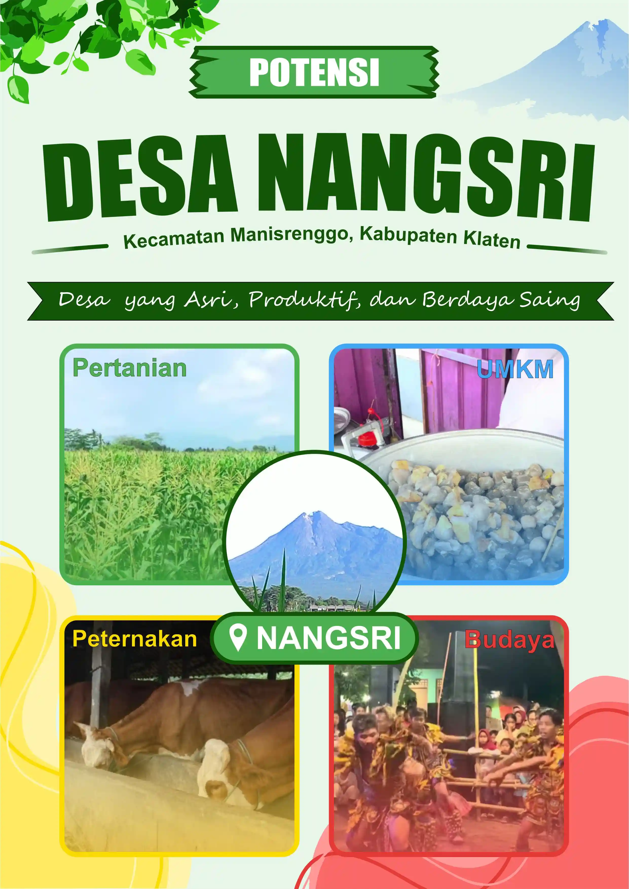

"Marilah kita bersama-sama membangun desa yang maju, sejahtera, dan bermartabat. Partisipasi aktif seluruh warga sangat kami harapkan demi tercapainya cita-cita bersama."
- Drs. Sumarjo
Kepala Desa
VISI
"Terwujudnya Desa yang Mandiri, Sejahtera, dan Berdaya Saing Berlandaskan Nilai Gotong Royong dan Kearifan Lokal"
MISI
1. Meningkatkan kualitas pelayanan publik yang cepat, transparan, dan akuntabel kepada seluruh masyarakat.
2. Mengembangkan potensi ekonomi lokal melalui pemberdayaan UMKM, pertanian, dan pariwisata desa.
3. Membangun infrastruktur yang merata dan berkelanjutan untuk mendukung kesejahteraan masyarakat.
4. Meningkatkan kualitas sumber daya manusia melalui pendidikan, pelatihan, dan pembinaan generasi muda.
5. Melestarikan nilai-nilai budaya dan kearifan lokal sebagai identitas dan kebanggaan warga desa.
6. Memperkuat tata kelola pemerintahan desa yang bersih, demokratis, dan partisipatif.

1. Pertanian
- Produksi padi, jagung, cabai, dan lainnya.
- Produksi sayuran dan palawija.
- Sistem irigasi desa.
- Lahan pertanian subur.
2. UMKM
- Warung dan usaha lokal.
- Industri rumahan.
- Kuliner tradisional.
- Kerajinan warga.
3. Peternakan
- Peternakan sapi berkualitas.
- Produksi daging.
- Produksi pakan ternak.
- Peluang usaha yang menjanjikan.
4. Budaya
- Gotong royong warga.
- Karang taruna aktif.
- Tradisi desa.
- Kesenian lokal.